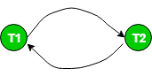

Prerequisite : Conflict Serializability
Precedence Graph or Serialization Graph is used commonly to test Conflict Serializability of a schedule.
It is a directed Graph (V, E) consisting of a set of nodes V = {T1, T2, T3……….Tn} and a set of directed edges E = {e1, e2, e3………………em}.
The graph contains one node for each Transaction Ti. An edge ei is of the form Tj –> Tk where Tj is the starting node of ei and Tk is the ending node of ei. An edge ei is constructed between nodes Tj to Tk if one of the operations in Tj appears in the schedule before some conflicting operation in Tk .
The Algorithm can be written as:
- Create a node T in the graph for each participating transaction in the schedule.
- For the conflicting operation read_item(X) and write_item(X) – If a Transaction Tj executes a read_item (X) after Ti executes a write_item (X), draw an edge from Ti to Tj in the graph.
- For the conflicting operation write_item(X) and read_item(X) – If a Transaction Tj executes a write_item (X) after Ti executes a read_item (X), draw an edge from Ti to Tj in the graph.
- For the conflicting operation write_item(X) and write_item(X) – If a Transaction Tj executes a write_item (X) after Ti executes a write_item (X), draw an edge from Ti to Tj in the graph.
- The Schedule S is serializable if there is no cycle in the precedence graph.
If there is no cycle in the precedence graph, it means we can construct a serial schedule S’ which is conflict equivalent to the schedule S.
The serial schedule S’ can be found by Topological Sorting of the acyclic precedence graph. Such schedules can be more than 1.
For example,
Consider the schedule S :
S : r1(x) r1(y) w2(x) w1(x) r2(y)
Creating Precedence graph:
- Make two nodes corresponding to Transaction T1 and T2.

- For the conflicting pair r1(x) w2(x), where r1(x) happens before w2(x), draw an edge from T1 to T2.

- For the conflicting pair w2(x) w1(x), where w2(x) happens before w1(x), draw an edge from T2 to T1.

Since the graph is cyclic, we can conclude that it is not conflict serializable to any schedule serial schedule.
Let us try to infer a serial schedule from this graph using topological ordering.
The edge T1–>T2 tells that T1 should come before T2 in the linear ordering.
The edge T2 –> T1 tells that T2 should come before T1 in the linear ordering.
So, we can not predict any particular order (when the graph is cyclic). Therefore, no serial schedule can be obtained from this graph.
Consider the another schedule S1 :
S1: r1(x) r3(y) w1(x) w2(y) r3(x) w2(x)
The graph for this schedule is :

Since the graph is acyclic, the schedule is conflict serializable. Performing Topological Sort on this graph would give us a possible serial schedule which is conflict equivalent to schedule S1.
In Topological Sort, we first select the node with indegree 0, which is T1. This would be followed by T3 and T2.
So, S1 is conflict serializable since it is conflict equivalent to the serial schedule T1 T3 T2.
Source: Operating Systems book, Silberschatz, Galvin and Gagne